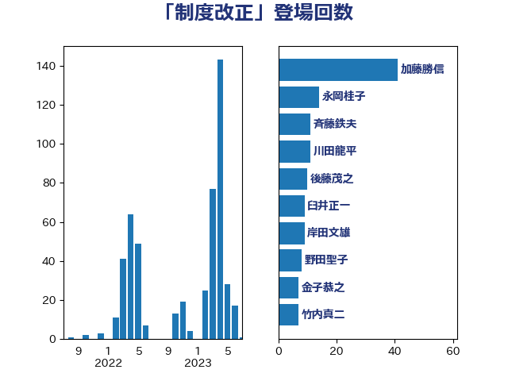

単語「制度改正」

| 加藤勝信 | 自由民主党 | 41 回 |
| 永岡桂子 | 自由民主党 | 14 回 |
| 斉藤鉄夫 | 公明党 | 11 回 |
| 川田龍平 | 立憲民主党 | 11 回 |
| 後藤茂之 | 自由民主党 | 10 回 |
| 臼井正一 | 自由民主党 | 9 回 |
| 岸田文雄 | 自由民主党 | 9 回 |
| 野田聖子 | 自由民主党 | 8 回 |
| 金子恭之 | 自由民主党 | 7 回 |
| 竹内真二 | 公明党 | 7 回 |
| 萩生田光一 | 自由民主党 | 6 回 |
| 秋本真利 | 無所属 | 6 回 |
| 松本剛明 | 自由民主党 | 6 回 |
| 岡田直樹 | 自由民主党 | 6 回 |
| 木村次郎 | 自由民主党 | 5 回 |
| 打越さく良 | 立憲民主党 | 5 回 |
| 高市早苗 | 自由民主党 | 4 回 |
| 細田健一 | 自由民主党 | 4 回 |
| 窪田哲也 | 公明党 | 4 回 |
| 末松信介 | 自由民主党 | 4 回 |
| 鈴木義弘 | 国民民主党 | 3 回 |
| 鈴木俊一 | 自由民主党 | 3 回 |
| 浜口誠 | 国民民主党 | 3 回 |
| 宮崎政久 | 自由民主党 | 3 回 |
| 倉林明子 | 日本共産党 | 3 回 |
| 鰐淵洋子 | 公明党 | 2 回 |
| 高良鉄美 | 無所属 | 2 回 |
| 野村哲郎 | 自由民主党 | 2 回 |
| 西村康稔 | 自由民主党 | 2 回 |
| 西岡秀子 | 国民民主党 | 2 回 |
| 藤井比早之 | 自由民主党 | 2 回 |
| 若松謙維 | 公明党 | 2 回 |
| 舩後靖彦 | れいわ新選組 | 2 回 |
| 簗和生 | 自由民主党 | 2 回 |
| 笠井亮 | 日本共産党 | 2 回 |
| 玉木雄一郎 | 国民民主党 | 2 回 |
| 横山信一 | 公明党 | 2 回 |
| 柳ヶ瀬裕文 | 日本維新の会 | 2 回 |
| 東徹 | 日本維新の会 | 2 回 |
| 早稲田ゆき | 立憲民主党 | 2 回 |
| 岩渕友 | 日本共産党 | 2 回 |
| 小野泰輔 | 日本維新の会 | 2 回 |
| 大野泰正 | 自由民主党 | 2 回 |
| 吉川赳 | 無所属 | 2 回 |
| 勝部賢志 | 立憲民主党 | 2 回 |
| 勝目康 | 自由民主党 | 2 回 |
| 務台俊介 | 自由民主党 | 2 回 |
| 中川郁子 | 自由民主党 | 2 回 |
| 中川宏昌 | 公明党 | 2 回 |
| 三宅伸吾 | 自由民主党 | 2 回 |
| おおつき紅葉 | 立憲民主党 | 2 回 |
| 齋藤健 | 自由民主党 | 1 回 |
| 高橋千鶴子 | 日本共産党 | 1 回 |
| 高橋光男 | 公明党 | 1 回 |
| 馬場成志 | 自由民主党 | 1 回 |
| 阿部知子 | 立憲民主党 | 1 回 |
| 金城泰邦 | 公明党 | 1 回 |
| 酒井庸行 | 自由民主党 | 1 回 |
| 進藤金日子 | 自由民主党 | 1 回 |
| 近藤昭一 | 立憲民主党 | 1 回 |
| 足立康史 | 日本維新の会 | 1 回 |
| 西田実仁 | 公明党 | 1 回 |
| 葉梨康弘 | 自由民主党 | 1 回 |
| 若林健太 | 自由民主党 | 1 回 |
| 若宮健嗣 | 自由民主党 | 1 回 |
| 芳賀道也 | 国民民主党 | 1 回 |
| 福重隆浩 | 公明党 | 1 回 |
| 福島伸享 | 無所属 | 1 回 |
| 田畑裕明 | 自由民主党 | 1 回 |
| 田村智子 | 日本共産党 | 1 回 |
| 田所嘉徳 | 自由民主党 | 1 回 |
| 田島麻衣子 | 立憲民主党 | 1 回 |
| 田中健 | 国民民主党 | 1 回 |
| 牧島かれん | 自由民主党 | 1 回 |
| 片山大介 | 日本維新の会 | 1 回 |
| 渡辺猛之 | 自由民主党 | 1 回 |
| 津島淳 | 自由民主党 | 1 回 |
| 河野義博 | 公明党 | 1 回 |
| 河野太郎 | 自由民主党 | 1 回 |
| 池田佳隆 | 自由民主党 | 1 回 |
| 橘慶一郎 | 自由民主党 | 1 回 |
| 横沢高徳 | 立憲民主党 | 1 回 |
| 森本真治 | 立憲民主党 | 1 回 |
| 柴田巧 | 日本維新の会 | 1 回 |
| 松沢成文 | 日本維新の会 | 1 回 |
| 早坂敦 | 日本維新の会 | 1 回 |
| 新妻秀規 | 公明党 | 1 回 |
| 徳永エリ | 立憲民主党 | 1 回 |
| 平木大作 | 公明党 | 1 回 |
| 市村浩一郎 | 日本維新の会 | 1 回 |
| 山田勝彦 | 立憲民主党 | 1 回 |
| 山本香苗 | 公明党 | 1 回 |
| 尾身朝子 | 自由民主党 | 1 回 |
| 小熊慎司 | 立憲民主党 | 1 回 |
| 小沼巧 | 立憲民主党 | 1 回 |
| 小沢雅仁 | 立憲民主党 | 1 回 |
| 小池晃 | 日本共産党 | 1 回 |
| 小森卓郎 | 自由民主党 | 1 回 |
| 小林鷹之 | 自由民主党 | 1 回 |
| 寺田稔 | 自由民主党 | 1 回 |
| 守島正 | 日本維新の会 | 1 回 |
| 奥野総一郎 | 立憲民主党 | 1 回 |
| 大河原まさこ | 立憲民主党 | 1 回 |
| 塩村あやか | 立憲民主党 | 1 回 |
| 堂込麻紀子 | 無所属 | 1 回 |
| 土田慎 | 自由民主党 | 1 回 |
| 国光あやの | 自由民主党 | 1 回 |
| 吉田統彦 | 立憲民主党 | 1 回 |
| 吉田久美子 | 公明党 | 1 回 |
| 吉田とも代 | 日本維新の会 | 1 回 |
| 古川禎久 | 自由民主党 | 1 回 |
| 古川直季 | 自由民主党 | 1 回 |
| 古川康 | 自由民主党 | 1 回 |
| 佐藤英道 | 公明党 | 1 回 |
| 佐々木さやか | 公明党 | 1 回 |
| 伊藤岳 | 日本共産党 | 1 回 |
| 伊波洋一 | 無所属 | 1 回 |
| 今井絵理子 | 自由民主党 | 1 回 |
| 井上貴博 | 自由民主党 | 1 回 |
| 中野洋昌 | 公明党 | 1 回 |
| 中川正春 | 立憲民主党 | 1 回 |
| 上野通子 | 自由民主党 | 1 回 |
| こやり隆史 | 自由民主党 | 1 回 |